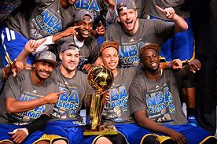

click here Click here to go head back to the first page;
Warriors championships since 2000:
4 championships
Lakers championships since 2000:
3 championships

The Golden State Warriors have consistently showcased their superiority over the Los Angeles Lakers in recent years, marked by their innovative style of play
and remarkable team chemistry. With a strong emphasis on three-point shooting and ball movement, the Warriors have redefined modern basketball, making them a formidable opponent. Their core players, including Stephen Curry and Klay Thompson, not only deliver exceptional individual performances but also elevate the entire team, often resulting in deep playoff runs and championship titles. In contrast, while the Lakers have a storied history and star power, the Warriors' consistent success in the postseason and their ability to adapt to various challenges highlight their edge in recent matchups.
Overall, the Warriors' blend of skill, strategy, and teamwork positions them as the stronger team in the current basketball landscape. The Lakers have only one 3 times since 2000 and the Warriors 4 times. This proves that the Dubs are ultimately the better team!
Lebron James has always had trouble against Steph and the Dubs. Out of the three times they have faced eachother, Steph has won 2 times and Lebron only once. Even though the Warriors lost Klay Thompson to free agency, Steph will win this upcoming season. I can feel it in my bones.
Click this link to find out why the warriors are the greatest team!
yup
for next page click here!click here